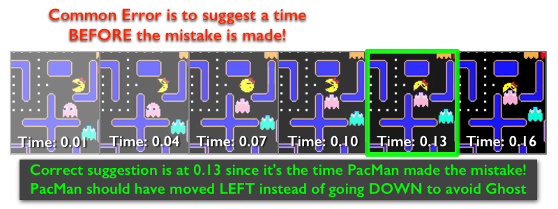

Important: Although the tutorial gives multiple chance of viewing the video. But in the actual task, the video ONLY plays once. Also there is ONLY 1 wrong move.
Instructions
You will watch a PacMan game and your task is to identify the time in seconds when PacMan makes a wrong move, and suggest what the correct move is. When selecting a wrong move, consider the 3 PacMan Rules as well as the efficiency and accuracy of PacMan. Below is a frame-by-frame sequence in a video that demonstrates when you should suggest an incorrect move.

3 PacMan Rules
1. The objective of this game is for PacMan to eat all the pills while earning as many points in order to win the game.
 2. PacMan will try to evade the Ghosts. If a Ghosts catches PacMan, the game ends.
2. PacMan will try to evade the Ghosts. If a Ghosts catches PacMan, the game ends.

3. PacMan can eat one of the 4 power pills and in doing so makes the Ghosts edible. (TRICK: To earn more points, an edible Ghost is worth 200 points, while a pill is only worth 10 points.)

- END -